OTIUM OTIUM — это практика осмысленного досуга. В античной традиции otium означало не отдых от труда, а время, в котором человек возвращается к взгляду, памяти и мышлению.
Мы создаём маршруты не для «посещения», а для пребывания — для внимательного присутствия в архитектуре и памяти места.
OTIUM существует для тех, кто хочет смотреть медленно.
Содержание Историческая справка 1. Римская Британия (I–V вв.) 2. Норманнская архитектура (XI–XII вв.) 3. Английская готика (XIII–XVI вв.) 4. Тюдор (XVI в.) 5. Елизаветинский и яковианский (конец XVI — начало XVII вв.) 6. Палладианство и Врен (XVII в.) 7. Георгианский стиль (1714–1830) 8. Регентство (1811–1830) 9. Викторианская эпоха (1837–1901) 10. Искусства и ремёсла (1880–1910) 11. Эдвардианский период (1901–1914) 12. Ар-нуво (1890-е — 1914) 13. Ар-деко (1920–1939) 14. Британский модернизм (1920–1970-е) 15. Брутализм (1960–1980-е) 16. Современная архитектура (1990-е — наст.) Историческая справка
↑ Содержание
От римских бань Бата и норманнского Дарема до палладианских террас, викторианского парламента и стеклянного Шарда английская архитектура задаёт ритм Британии и её колониального наследия.
Готика, тюдоровские особняки и классика Кристофера Рена сменились георгианскими квадратами и индустриальной готикой Викторианской эпохи. Модернизм, брутализм и высокотехнологичные башни XXI века продолжают лондонский диалог о публичном пространстве.
Каждая глава содержит примеры с изображениями только из Commons.
1. Римская Британия (I–V вв.) ↑ Содержание
Бани, стены и амфитеатры римской провинции.
Бани в Бате
↑ Содержание
Адрес: Бат | Стиль: Римская Британия (I–V вв.)
Храм Сульис Минервы и термы.
Вал Адриана
↑ Содержание
Адрес: Северная Англия | Стиль: Римская Британия (I–V вв.) | Период: 122–128
Пограничная линия римской обороны.
Лондиниум
↑ Содержание
Адрес: Лондон | Стиль: Римская Британия (I–V вв.)
Фрагменты римских укреплений.
Фишборн
↑ Содержание
Адрес: Солтхилл-роуд, Фишборн, PO19 3QR | Стиль: Римская Британия (I–V вв.)
Крупнейший римский дворец Британии.
2. Норманнская архитектура (XI–XII вв.) ↑ Содержание
Массивные башни и романские соборы после 1066 года.
Аббатство Фаунтинс
↑ Содержание
Адрес: Фаунтинс, Рипон HG4 3DY | Стиль: Норманнская архитектура (XI–XII вв.) | Период: 1132–1539
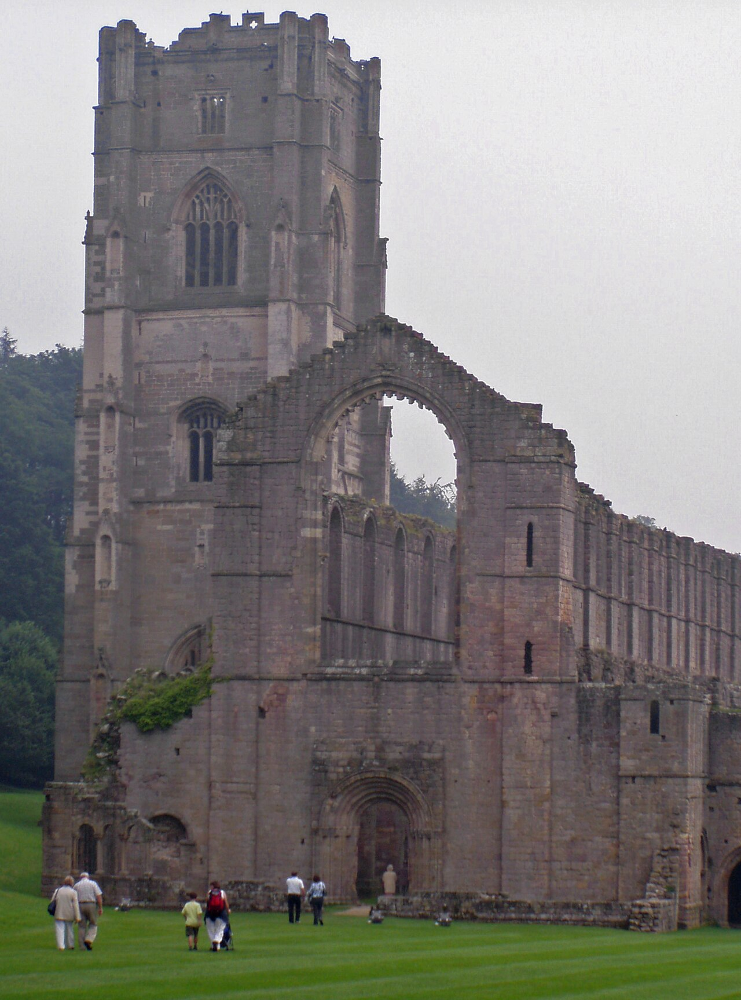
Крупнейшие монастырские руины Великобритании; объект ЮНЕСКО в Йоркшире.
Глазгоский собор
↑ Содержание
Адрес: Катедрал-сквер, Глазго G4 0UZ | Стиль: Норманнская архитектура (XI–XII вв.)
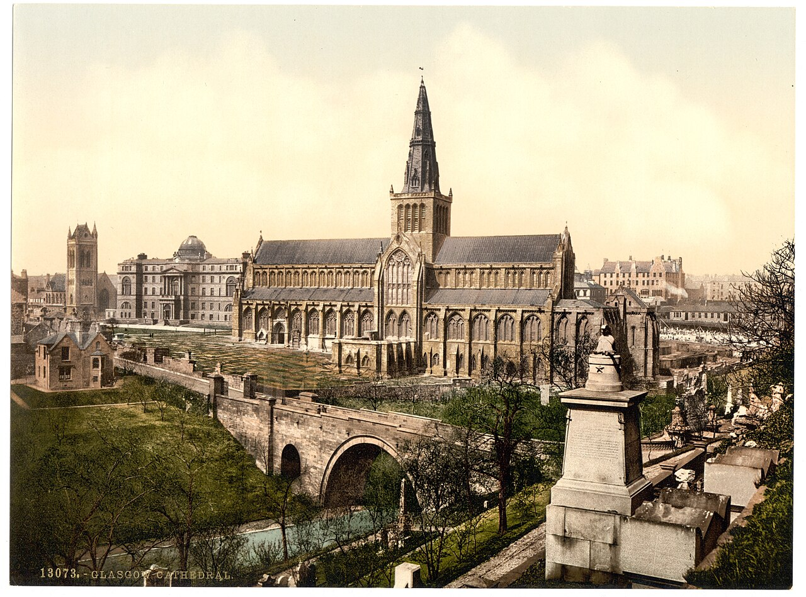
Шотландская готика на могиле святого Мунго; редкий собор, переживший Реформацию.
Кентерберийский собор
↑ Содержание
Адрес: Кентербери | Стиль: Норманнская архитектура (XI–XII вв.) | Период: 1070–
Место паломничества и убийства Бекета.
Лондонский Тауэр
↑ Содержание
Адрес: Лондон | Стиль: Норманнская архитектура (XI–XII вв.) | Период: 1078–
Белая башня Вильгельма Завоевателя.
Собор Дарема
↑ Содержание
Адрес: Дарем | Стиль: Норманнская архитектура (XI–XII вв.) | Период: 1093–1133
Собор Или
↑ Содержание
Адрес: Или | Стиль: Норманнская архитектура (XI–XII вв.) | Период: 1083–1375
Октогон и западная башня.
Собор Саутарка
↑ Содержание
Адрес: Лондон | Стиль: Норманнская архитектура (XI–XII вв.)
Приходский собор у Borough Market.
Собор Сент-Олбанса
↑ Содержание
Адрес: Сампсон-эвеню, Сент-Олбанс AL1 1BY | Стиль: Норманнская архитектура (XI–XII вв.)
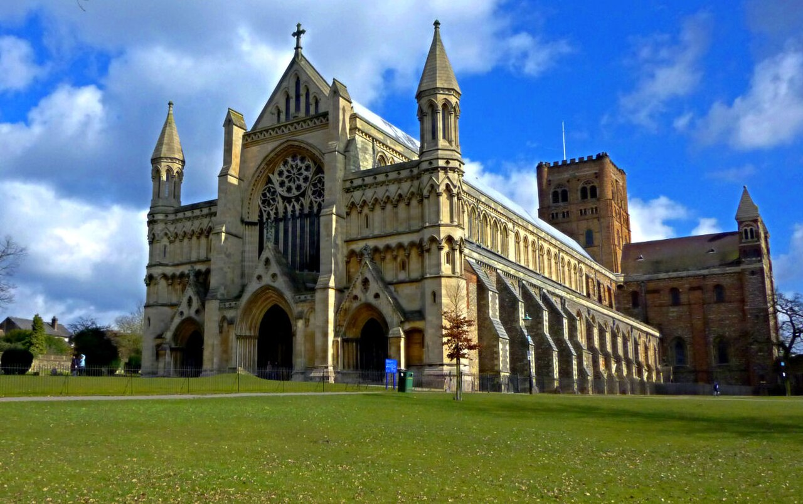
Длиннейший неф средневековой Англии на месте мученичества святого Албана.
Темпл-черч
↑ Содержание
Адрес: Темпл, Лондон EC4Y 7BB | Стиль: Норманнская архитектура (XI–XII вв.) | Период: 1162–1240
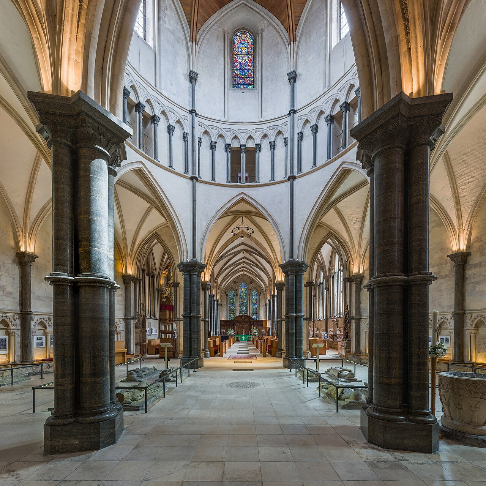
Круглая церковь тамплиеров в Сити; романский ротонда и готический хор.
3. Английская готика (XIII–XVI вв.) ↑ Содержание
Перпендикуляр, декорированный и раннеанглийский стили.
Аббатство Тинтерн
↑ Содержание
Адрес: Аббат-роуд, Тинтерн, Чепстоу NP16 6SE | Стиль: Английская готика (XIII–XVI вв.) | Период: 1131–1536
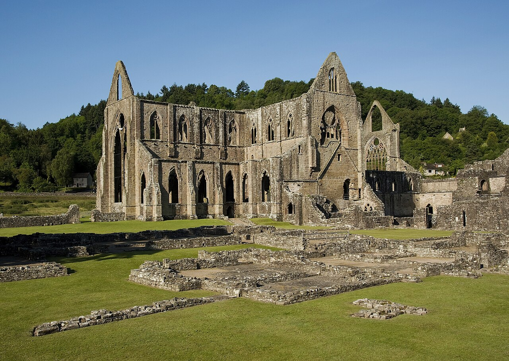
Руины цистерцианского аббатства в долине Уай; романтический символ Уэльса.
Вестминстерское аббатство
↑ Содержание
Адрес: Лондон | Стиль: Английская готика (XIII–XVI вв.) | Период: 1245–
Коронации и похороны монархов.
Винчестерский собор
↑ Содержание
Адрес: Катедрал-лейн, 9, Винчестер SO23 9LS | Стиль: Английская готика (XIII–XVI вв.) | Период: 1079–1532
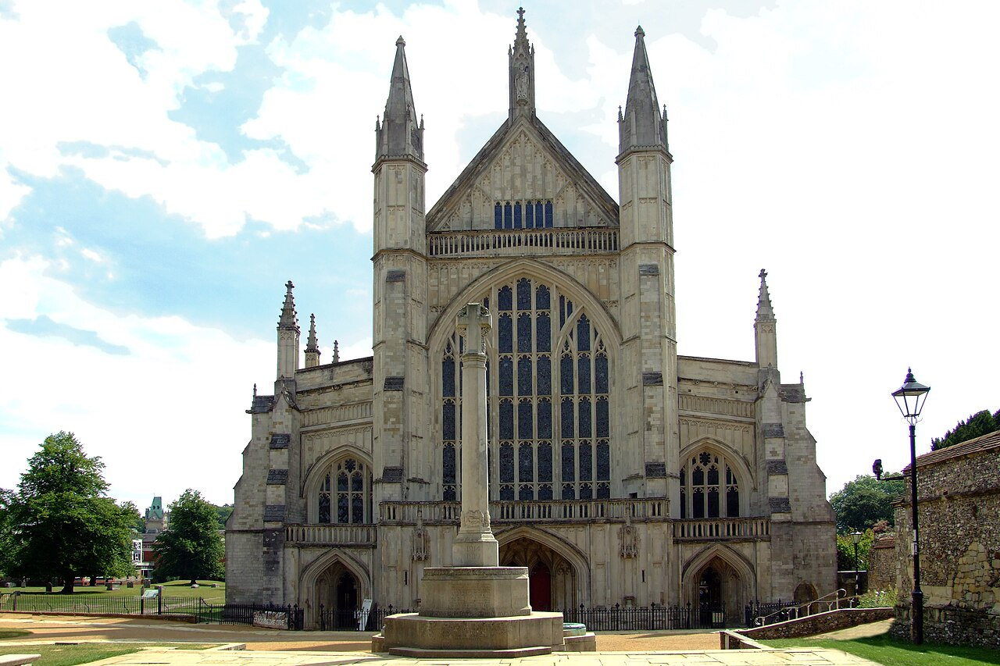
Один из крупнейших готических соборов Европы; древняя базилика королей Уэссекса.
Вустерский собор
↑ Содержание
Адрес: Колледж-ярд, 8, Вустер WR1 2LA | Стиль: Английская готика (XIII–XVI вв.) | Период: 1084–1504
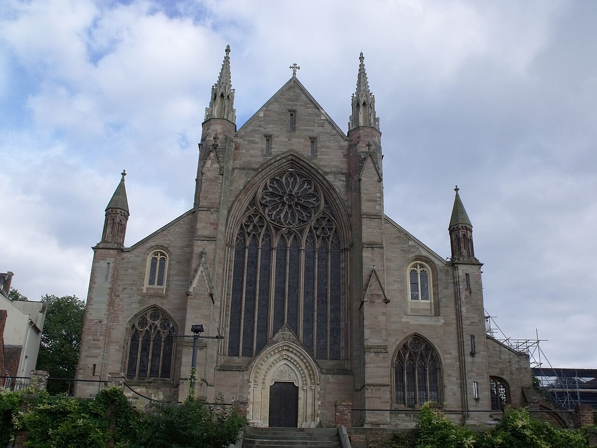
Место захоронения короля Иоанна; норманнский крипта и поздняя готика.
Йоркский минстер
↑ Содержание
Адрес: Йорк | Стиль: Английская готика (XIII–XVI вв.) | Период: 1220–1472
Капелла Кингс-колледжа
↑ Содержание
Адрес: Кембридж | Стиль: Английская готика (XIII–XVI вв.) | Период: 1446–1515
Перпендикулярный фанерный свод.
Линкольнский собор
↑ Содержание
Адрес: Линкольн | Стиль: Английская готика (XIII–XVI вв.) | Период: 1072–1311
Тройной западный фасад и шпиль.
Собор Святого Гиля
↑ Содержание
Адрес: Хай-стрит, Эдинбург EH1 1RE | Стиль: Английская готика (XIII–XVI вв.)
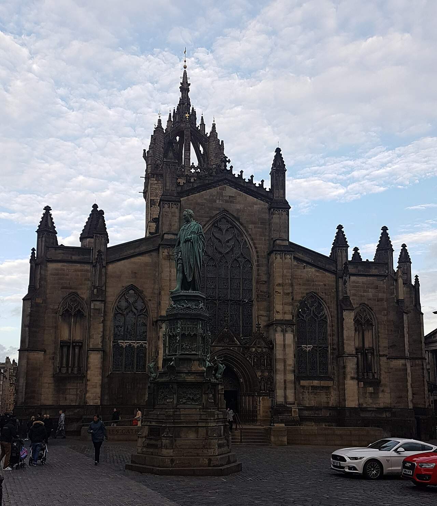
Коронный шпиль на Роял-Майл; приходская церковь Эдинбурга.
Собор Уэллса
↑ Содержание
Адрес: Катедрал-Грин, Уэлс BA5 2UE | Стиль: Английская готика (XIII–XVI вв.)
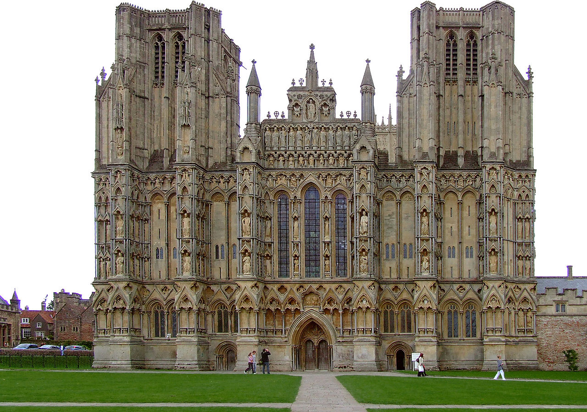
Раннеготический собор с скульптурным фасадом и часами астрономических часов.
Солсберийский собор
↑ Содержание
Адрес: Солсбери | Стиль: Английская готика (XIII–XVI вв.) | Период: 1220–1258
Самый высокий шпиль Британии.
4. Тюдор (XVI в.) ↑ Содержание
Каркасное заполнение, острые арки и кирпичные особняки.
Лейер-Марни
↑ Содержание
Адрес: Эссекс | Стиль: Тюдор (XVI в.) | Период: 1520–1523
Кирпичная воротная башня.
Литл-Мортон
↑ Содержание
Адрес: Чешир | Стиль: Тюдор (XVI в.)
Деревянный каркасный особняк.
Хардвик-холл
↑ Содержание
Адрес: Дербишир | Стиль: Тюдор (XVI в.) | Период: 1590–1597
Стекло и камень Бесс Хардвик.
Хэмптон-корт
↑ Содержание
Адрес: Лондон | Стиль: Тюдор (XVI в.) | Период: 1514–
Дворец Генриха VIII и Вильгельма III.
Церковь Святого Иакова
↑ Содержание
Адрес: Пикадилли, Лондон W1J 9LL | Стиль: Тюдор (XVI в.) | Период: 1684
Церковь Вренa на Пикадилли.
5. Елизаветинский и яковианский (конец XVI — начало XVII вв.) ↑ Содержание
Симметричные фасады и классические детали.
Болсовер
↑ Содержание
Адрес: Дербишир | Стиль: Елизаветинский и яковианский (конец XVI — начало XVII вв.) | Период: 1612–1617
Маленький романтический замок.
Куинз-хаус
↑ Содержание
Адрес: Лондон | Стиль: Елизаветинский и яковианский (конец XVI — начало XVII вв.) | Период: 1616–1635
Первый классический дворец Англии.
Одли-Энд
↑ Содержание
Адрес: Эссекс | Стиль: Елизаветинский и яковианский (конец XVI — начало XVII вв.) | Период: 1605–1614
Парадный яковианский особняк.
Хатфилд-хаус
↑ Содержание
Адрес: Хатфилд | Стиль: Елизаветинский и яковианский (конец XVI — начало XVII вв.) | Период: 1607–1612
Яковианский дворец с садом.
6. Палладианство и Врен (XVII в.) ↑ Содержание
Классические пропорции после Великого пожара.
Гринвич
↑ Содержание
Адрес: Кинг-Уильям-уок, Гринвич, Лондон SE10 9NN | Стиль: Палладианство и Врен (XVII в.) | Период: 1696–1712
Барочно-классический ансамбль.
Королевский госпиталь
↑ Содержание
Адрес: Лондон | Стиль: Палладианство и Врен (XVII в.) | Период: 1682–1692
Кварталы пенсионеров Вренa.
Собор Святого Павла
↑ Содержание
Адрес: Лондон | Стиль: Палладианство и Врен (XVII в.) | Период: 1675–1710
Церковь Мартина-в-полях
↑ Содержание
Адрес: Лондон | Стиль: Палладианство и Врен (XVII в.) | Период: 1726
Портик на Трафальгарской площади.
Чизик-хаус
↑ Содержание
Адрес: Лондон | Стиль: Палладианство и Врен (XVII в.) | Период: 1726–1729
Палладианская вилла Бurlington.
7. Георгианский стиль (1714–1830) ↑ Содержание
Кирпичные террасы, ордер и городские квадраты.
Аббатство Бат
↑ Содержание
Адрес: Бат-Эбби Чёрчярд, Бат BA1 1LT | Стиль: Георгианский стиль (1714–1830) | Период: 1499–1616
Фанерные своды на фоне римских бань.
Бедфорд-сквер
↑ Содержание
Адрес: Лондон | Стиль: Георгианский стиль (1714–1830) | Период: 1775–1783
Сохранённый георгианский квартал.
Капелла короля
↑ Содержание
Адрес: Бостон | Стиль: Георгианский стиль (1714–1830) | Период: 1754
Первый англиканский приход Бостона.
Королевский полумесяц
↑ Содержание
Адрес: Бат | Стиль: Георгианский стиль (1714–1830) | Период: 1767–1775
Палладианская дуга террас.
Синагога Бевис Маркс
↑ Содержание
Адрес: Бевис Маркс, Лондон EC3A 7LH | Стиль: Георгианский стиль (1714–1830) | Период: 1701
Старейшая синагога Великобритании в непрерывном использовании.
Холкем-холл
↑ Содержание
Адрес: Норфолк | Стиль: Георгианский стиль (1714–1830) | Период: 1734–1764
Палладианский загородный дом.
Церковь Христа
↑ Содержание
Адрес: Филадельфия | Стиль: Георгианский стиль (1714–1830) | Период: 1744
Колониальная англиканская церковь Старого города.
Цирк
↑ Содержание
Адрес: Бат | Стиль: Георгианский стиль (1714–1830) | Период: 1754–1768
8. Регентство (1811–1830) ↑ Содержание
Элегантные фасады и бульварная застройка Брайтона.
Карлтон-хаус-террас
↑ Содержание
Адрес: Лондон | Стиль: Регентство (1811–1830) | Период: 1827–1833
Белокаменные неоклассические фасады.
Королевский павильон
↑ Содержание
Адрес: Брайтон | Стиль: Регентство (1811–1830) | Период: 1815–1822
Индо-сарацинский дворец Георга IV.
Парк-кресент
↑ Содержание
Адрес: Лондон | Стиль: Регентство (1811–1830) | Период: 1812–1820
Полукруглый классический фасад.
Риджент-стрит
↑ Содержание
Адрес: Риджент-стрит, Лондон W1 | Стиль: Регентство (1811–1830) | Период: 1813–1823
Кривая торговая ось Нэша.
9. Викторианская эпоха (1837–1901) ↑ Содержание
Готическое возрождение, железо и промышленные города.
Вестминстерский дворец
↑ Содержание
Адрес: Лондон | Стиль: Викторианская эпоха (1837–1901) | Период: 1840–1870
Парламент Барри и Пьюджина.
Вестминстерский кафедральный собор
↑ Содержание
Адрес: Лондон | Стиль: Викторианская эпоха (1837–1901) | Период: 1895–1903
Католический собор в неовизантийском стиле.
Мемориал Альберта
↑ Содержание
Адрес: Лондон | Стиль: Викторианская эпоха (1837–1901) | Период: 1872–1876
Эклектический памятник в Кенсингтоне.
Музей естествознания
↑ Содержание
Адрес: Лондон | Стиль: Викторианская эпоха (1837–1901) | Период: 1873–1881
Романо-византийский фасад Уотерхауса.
Оратория Бромптон
↑ Содержание
Адрес: Бромптон-роуд, Лондон SW7 2RP | Стиль: Викторианская эпоха (1837–1901) | Период: 1880–1893
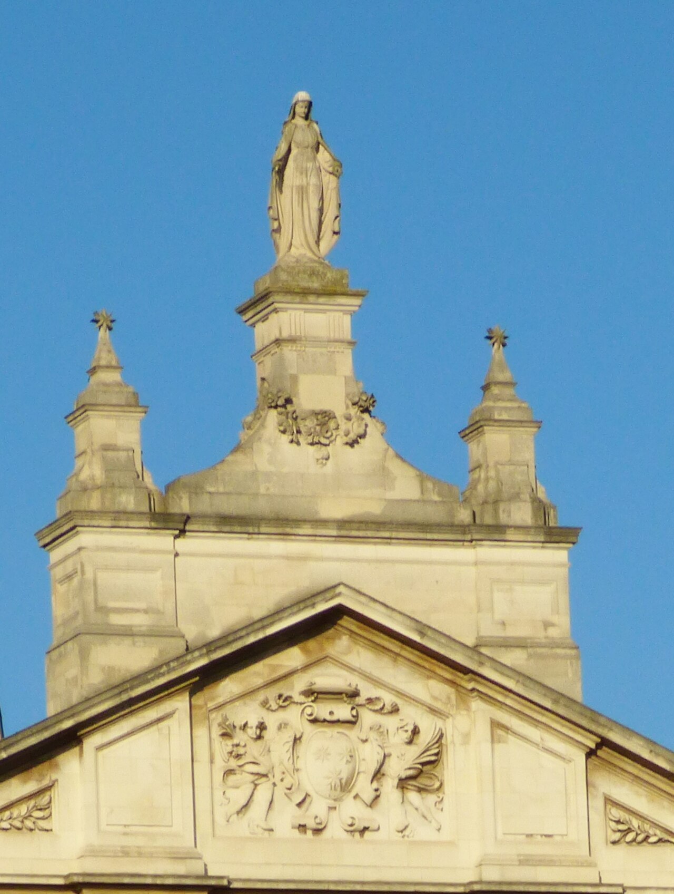
Католическая базилика в итальянском барокко; второй по величине церковный купол Лондона.
Сент-Панкрас
↑ Содержание
Адрес: Лондон | Стиль: Викторианская эпоха (1837–1901) | Период: 1868
Викторианский вокзал-неоготика.
Собор Ливерпуля
↑ Содержание
Адрес: Ливерпуль | Стиль: Викторианская эпоха (1837–1901) | Период: 1904–1978
Крупнейший англиканский собор в мире.
10. Искусства и ремёсла (1880–1910) ↑ Содержание
Реакция на индустриализацию и машинное производство.
Блэквелл
↑ Содержание
Адрес: Боунесс-он-Уиндермир, Камбрия LA23 3JT | Стиль: Искусства и ремёсла (1880–1910) | Период: 1898–1900
Красный дом
↑ Содержание
Адрес: Ред-Хаус-лейн, Бекслихит, Лондон DA6 8JF | Стиль: Искусства и ремёсла (1880–1910) | Период: 1859–1860
Стэнден
↑ Содержание
Адрес: Вест-Суссекс | Стиль: Искусства и ремёсла (1880–1910) | Период: 1891–1894
Семейный дом Филиппа Уэбба.
Уайтвик
↑ Содержание
Адрес: Вулвергемптон | Стиль: Искусства и ремёсла (1880–1910) | Период: 1887–1893
Манер Морриса и Пре-Рафаэлитов.
11. Эдвардианский период (1901–1914) ↑ Содержание
Лёгкая классика и барокко возрождения.
Edwardian Lloyds Register
↑ Содержание
Адрес: Фенчёрч-стрит, 71, Лондон EC3M 4BS | Стиль: Эдвардианский период (1901–1914) | Период: 1901
Купольный офис на Фенчёрч-стрит.
Адмиралтейство
↑ Содержание
Адрес: Лондон | Стиль: Эдвардианский период (1901–1914) | Период: 1910
Триумфальная арка к Молу.
Дели-экспресс
↑ Содержание
Адрес: Лондон | Стиль: Эдвардианский период (1901–1914) | Период: 1932
Ар-деко фасад Флит-стрит.
Ратуша Мидлсбро
↑ Содержание
Адрес: Мидлсбро | Стиль: Эдвардианский период (1901–1914) | Период: 1883–1889
Викторианско-эдвардианская ратуша.
12. Ар-нуво (1890-е — 1914) ↑ Содержание
Изогнутые линии, цветная керамика и декоративные фасады.
Кафе «Индюк»
↑ Содержание
Адрес: Гранби-стрит, 24, Лестер LE1 1DA | Стиль: Ар-нуво (1890-е — 1914) | Период: 1901
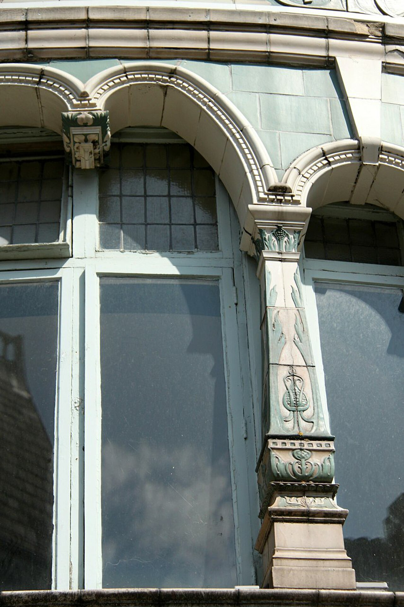
Декоративный фасад кафе с мотивами индейки; реконструкция Артура Уонсома.
Королевская аркада
↑ Содержание
Адрес: Джентльменс-уок, 28, Норвич NR2 1ND | Стиль: Ар-нуво (1890-е — 1914) | Период: 1899
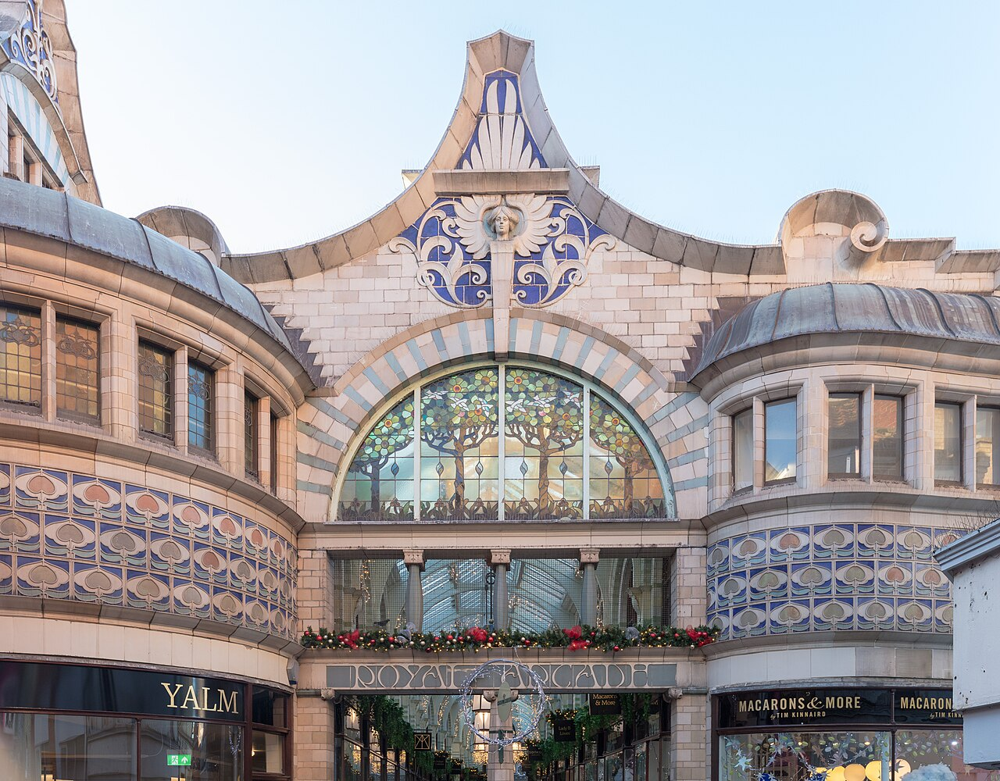
Крытая торговая галерея Джорджа Скиппера с витражами и керамикой.
Продовольственный зал Harrods
↑ Содержание
Адрес: Бромптон-роуд, 87–135, Лондон SW1X 7XL | Стиль: Ар-нуво (1890-е — 1914) | Период: 1901–1902
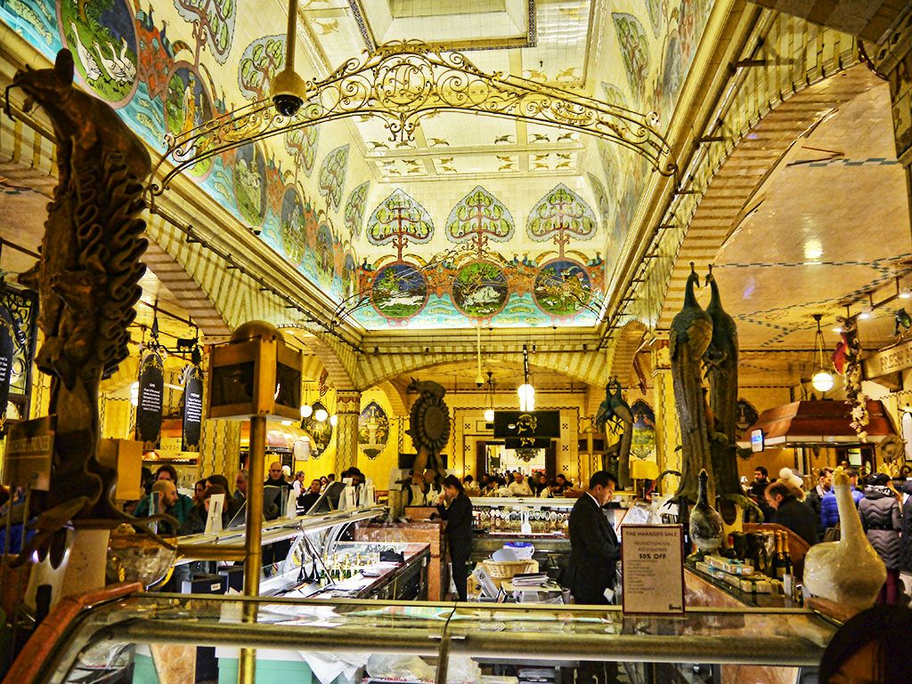
Кафе и продовольственные отделы с плиткой ар-нуво в универмаге Harrods.
Типография Эверарда
↑ Содержание
Адрес: Брод-стрит, 38, Бристоль BS1 2HG | Стиль: Ар-нуво (1890-е — 1914) | Период: 1900–1901
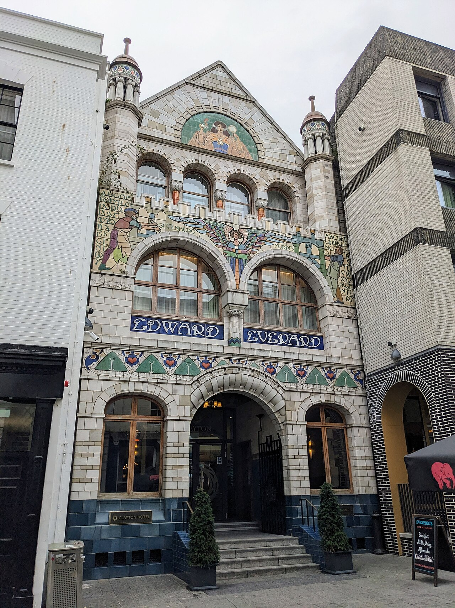
Фасад из цветной керамики Уильяма Джеймса Нитби для пивоварни Эверарда.
Церковь Куинз-кросс
↑ Содержание
Адрес: Гарскьюб-роуд, 870, Глазго G20 7EL | Стиль: Ар-нуво (1890-е — 1914) | Период: 1898–1899
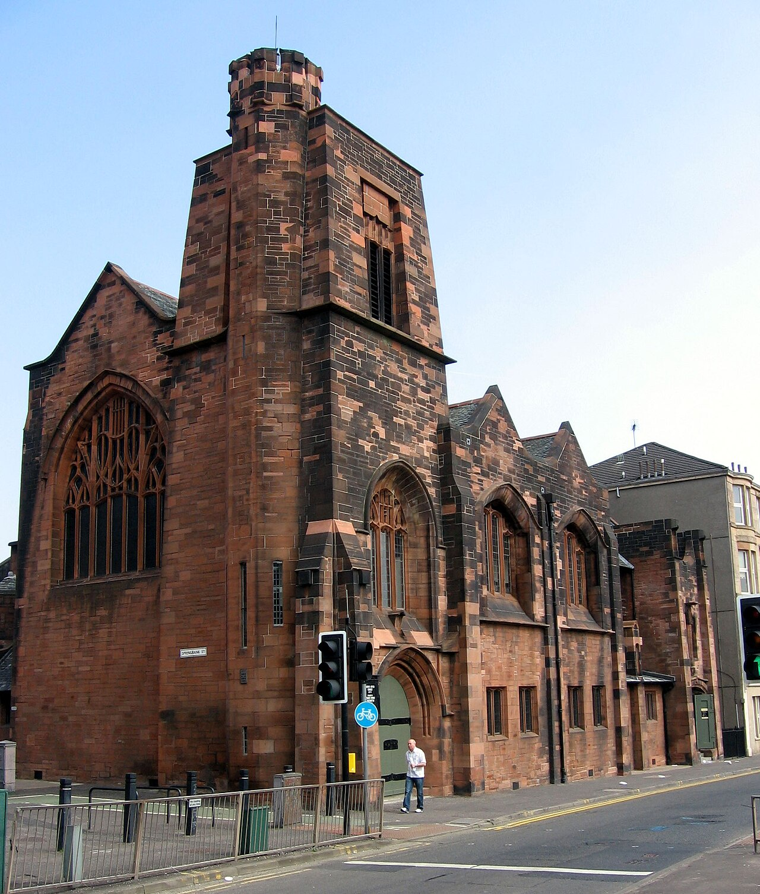
Единственная построенная церковь Чарльза Ренни Макинтоша; шпиль и асимметричный силуэт.
13. Ар-деко (1920–1939) ↑ Содержание
Геометрия и роскошь межвоенной Британии.
Art Deco Broadcasting House
↑ Содержание
Адрес: Лондон | Стиль: Ар-деко (1920–1939) | Период: 1932
Art Deco Daily Telegraph
↑ Содержание
Адрес: Флит-стрит, 135–141, Лондон EC4A 2BU | Стиль: Ар-деко (1920–1939) | Период: 1928–1930
Art Deco Marine Court
↑ Содержание
Адрес: Сент-Леонардс | Стиль: Ар-деко (1920–1939) | Период: 1936–1938
Океанский лайнер в архитектуре.
Здание Хувера
↑ Содержание
Адрес: Лондон | Стиль: Ар-деко (1920–1939) | Период: 1932–1938
Белый фасад с зелёными деталями.
Синагога Виллсден
↑ Содержание
Адрес: Парксайд, Уиллсден, Лондон NW2 5RX | Стиль: Ар-деко (1920–1939) | Период: 1937
Ар-деко синагога северо-западного Лондона.
14. Британский модернизм (1920–1970-е) ↑ Содержание
Модернистское движение и послевоенное жильё.
Modernism Centre Point
↑ Содержание
Адрес: Лондон | Стиль: Британский модернизм (1920–1970-е) | Период: 1963–1966
Офисная башня на Тоттенхэм-корт-роуд.
Барбикан
↑ Содержание
Адрес: Лондон | Стиль: Британский модернизм (1920–1970-е) | Период: 1965–1976
Бруталистский жилой комплекс.
Собор Ковентри
↑ Содержание
Адрес: Ковентри | Стиль: Британский модернизм (1920–1970-е) | Период: 1956–1962
Базилика Спенса рядом с руинами войны.
Фестиваль-холл
↑ Содержание
Адрес: Лондон | Стиль: Британский модернизм (1920–1970-е) | Период: 1948–1951
Центр Фестиваля Британии.
Хайпоинт
↑ Содержание
Адрес: Лондон | Стиль: Британский модернизм (1920–1970-е) | Период: 1933–1935
15. Брутализм (1960–1980-е) ↑ Содержание
Бетонные жилые и культурные комплексы.
Александра-роуд
↑ Содержание
Адрес: Александра-роуд, Лондон NW8 0DH | Стиль: Брутализм (1960–1980-е) | Период: 1972–1978
Зигзагообразный жилой фасад.
Национальный театр
↑ Содержание
Адрес: Лондон | Стиль: Брутализм (1960–1980-е) | Период: 1967–1976
Бетонные террасы Ласдунa.
Собор Клифтона
↑ Содержание
Адрес: Клифтон-парк, Бристоль BS8 3BX | Стиль: Брутализм (1960–1980-е) | Период: 1969–1973
Бетонный католический собор.
Треллик-тауэр
↑ Содержание
Адрес: Лондон | Стиль: Брутализм (1960–1980-е) | Период: 1968–1972
Хейуорд
↑ Содержание
Адрес: Лондон | Стиль: Брутализм (1960–1980-е) | Период: 1968
Бетонная галерея на Южном берегу.
16. Современная архитектура (1990-е — наст.) ↑ Содержание
Музеи, небоскрёбы и устойчивые кварталы.
Ллойд-Билдинг
↑ Содержание
Адрес: Лондон | Стиль: Современная архитектура (1990-е — наст.) | Период: 1978–1986
Лондонская центральная мечеть
↑ Содержание
Адрес: Лондон | Стиль: Современная архитектура (1990-е — наст.) | Период: 1977
Золотой купол у Риджентс-парка.
Свисс-Ре
↑ Содержание
Адрес: Лондон | Стиль: Современная архитектура (1990-е — наст.) | Период: 2001–2004
Биоморфная башня Фостера.
Тейт Модерн
↑ Содержание
Адрес: Лондон | Стиль: Современная архитектура (1990-е — наст.) | Период: 1995–2000
Бывшая электростанция Бэнксайда.
Шард
↑ Содержание
Адрес: Лондон | Стиль: Современная архитектура (1990-е — наст.) | Период: 2009–2012
Стеклянный пик Лондон-Бридж.